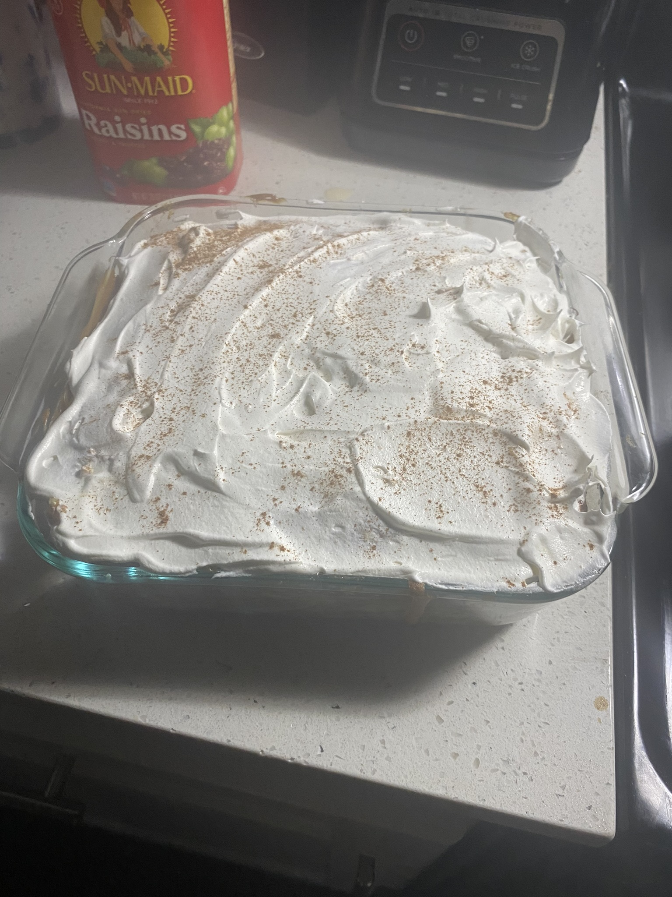
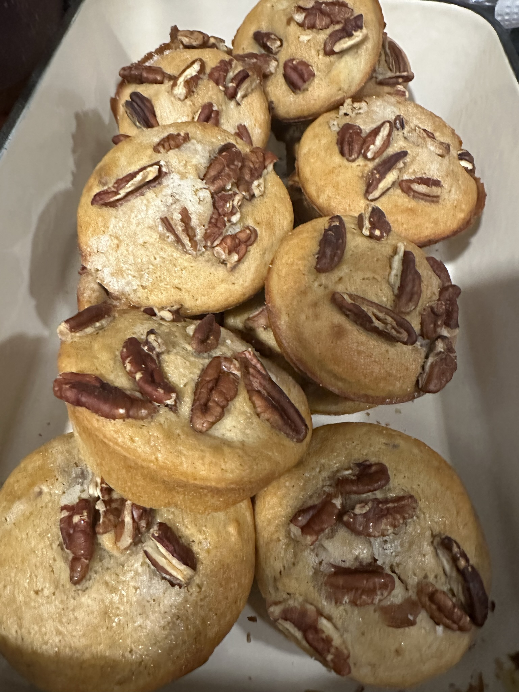

Featured Recipes
Explore a collection of sweet creations made with love.

Flan
A classic creamy dessert with caramel flavor and a smooth texture.

Tres Leches Cake
A soft and moist cake soaked in three types of milk, topped with whipped cream.

Pumpkin Cake
A warm and spiced pumpkin-based cake perfect for any season.

Cookies
Soft, sweet cookies with a homemade flavor that everyone loves.

Quesitos
A flaky pastry filled with sweet cream cheese, a Caribbean favorite.

Apple Muffin
A soft and fluffy muffin with apple chunks and a warm touch of cinnamon.
Recipe Comparison Table
| Dessert | Difficulty | Prep Time |
|---|---|---|
| Flan | Easy | 45 minutes |
| Tres Leches Cake | Medium | 1 hour |
| Cookies | Easy | 30 minutes |